ÖZGEÇMİŞ
Köprüköy doğumlu. Ankara'da yaşamakta olup edebiyatı çok sever. Daha çok adını sinemacı olarak duyursa da şimdilik basılı olarak "Bir" ve "Ötede Dirilmek Var" isminde iki şiir kitabı ve "Sayfa Doldurma Memuru" ile "Doğu'da Bir Öğretmen" isminde iki hikâye kitabı ve son olarak "Kedersiz Yazlar ve Yağmur Çalan Baharlar" isminde bir romanı bulunmaktadır. Sinemacı olarak çok sayıda uzun ve kısa metrajlı belgesel filmin çekimini yapmıştır.
FİLMLER
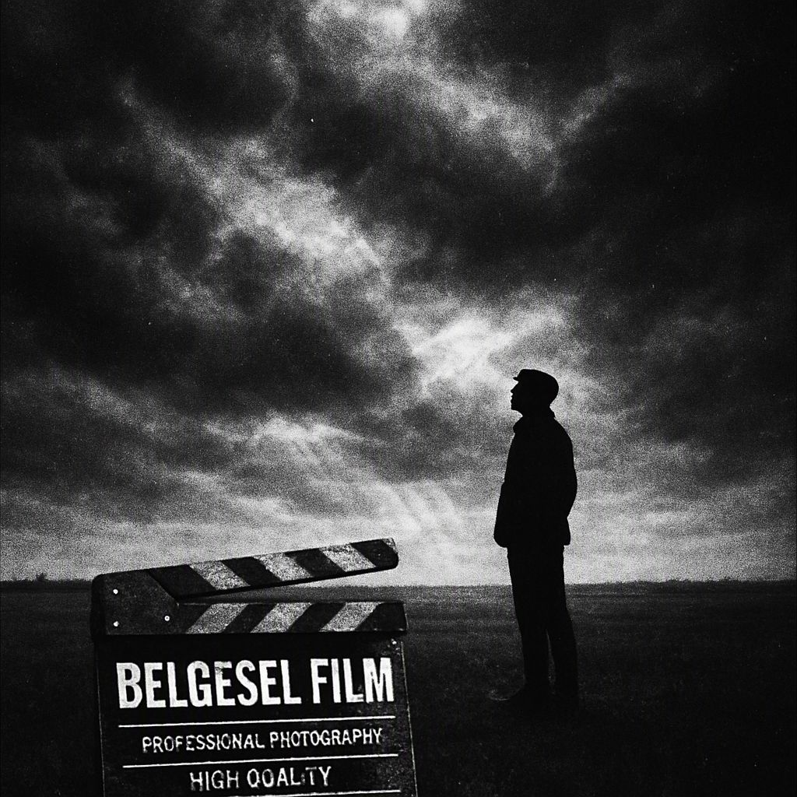
Biraz Tarkovski Kuşanmak
Sinema tarihinin en özgün yönetmenlerinden Andrey Tarkovski'nin izinden giden bu belgesel, sanatın ve yaratıcılığın sınırlarını sorguluyor.
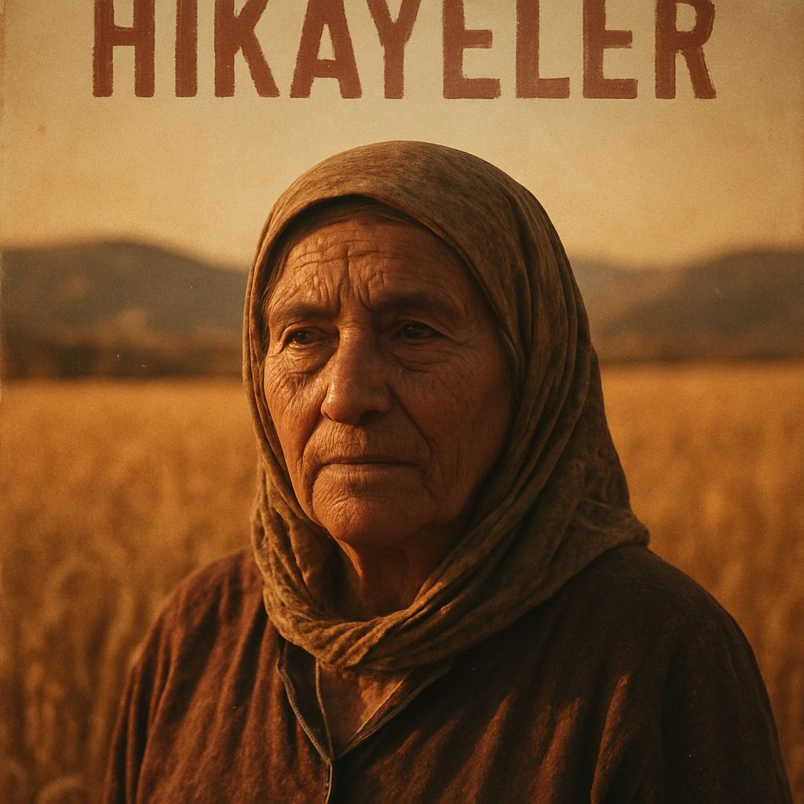
Meto'dan Kısa Hikayeler
Anadolu'nun ücra köşelerinden derlenen kısa hikayelerin büyülü dünyasına bir yolculuk. İnsanın insanla, doğayla ve kaderle hesaplaşması.
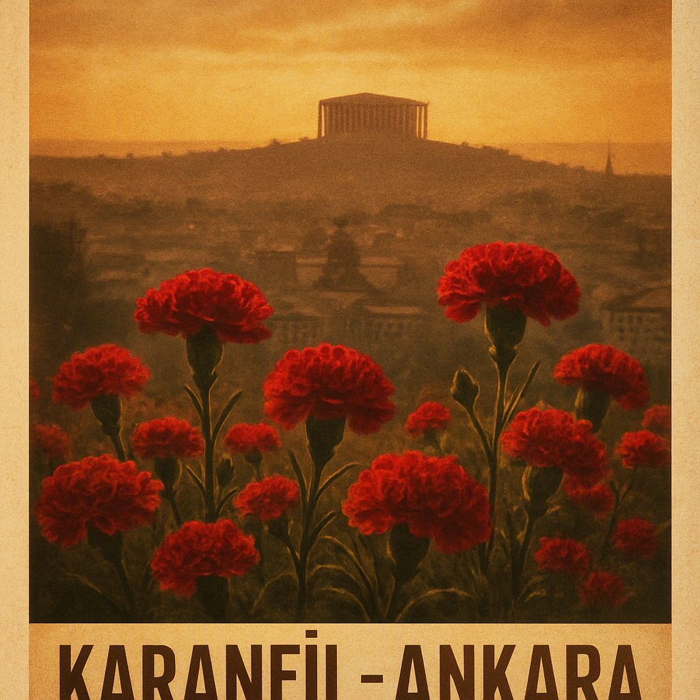
Karanfil Kokulu Ankara'm
Başkentin hafızasında iz bırakan sokaklar, insanlar ve anılar. Ankara'nın karanfil kokan nostaljik bir portresi.
Kederden İrkilen Mevsimler
Mevsimlerin değişimiyle birlikte insanın iç dünyasındaki dönüşümü anlatan lirik bir belgesel.
Sahaf Günlüğü
Eski kitapların ve onları seven insanların dünyasına açılan bir kapı. Sahafların sessiz ama derin evreninden notlar.
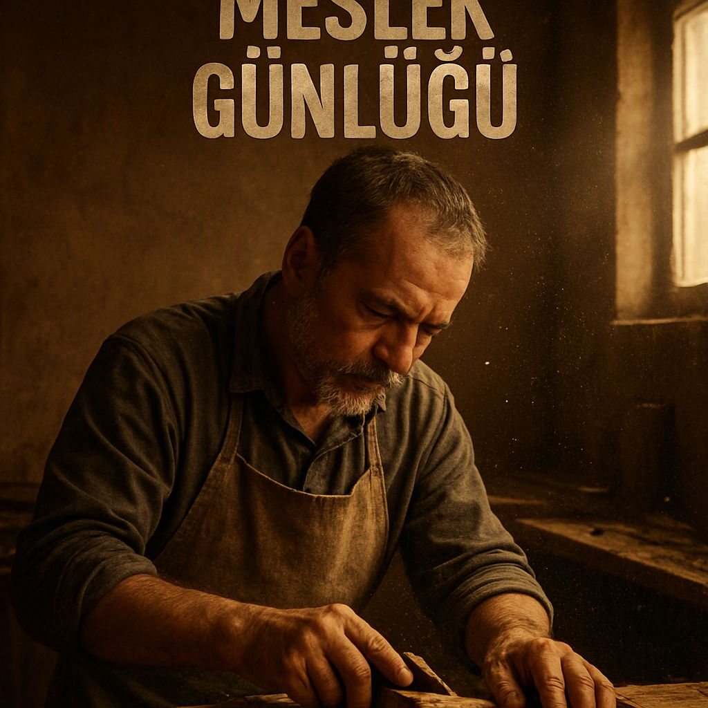
Meslek Günlüğü
Farklı mesleklerden insanların gündelik hayatlarına, emeklerine ve hayallerine yakın çekim bir bakış.
KİTAPLAR
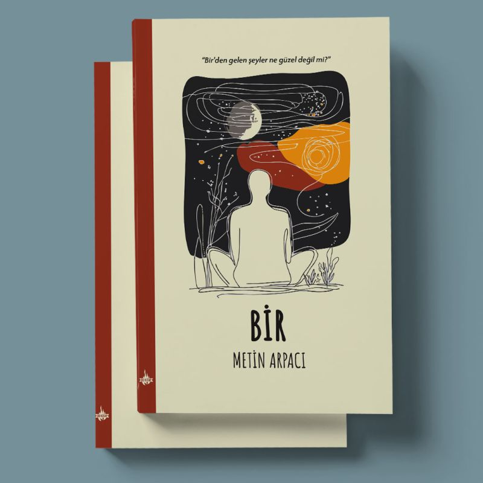
Bir
"Bir'den gelen şeyler ne güzel değil mi?" — Şiirin özünde birliğin ve bütünlüğün arayışı yatar. Bu kitap, varoluşun en sade ve en derin anlarını şiirle yakalar.
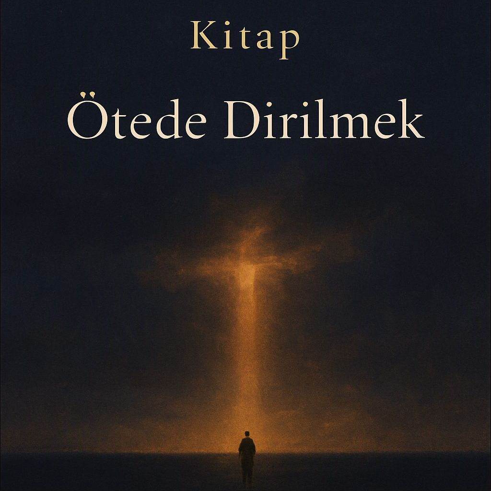
Ötede Dirilmek Var
"Ölümün ötesinde bir dirilişin umudunu taşıyan şiirler. Kayıp, özlem ve yeniden doğuşun lirik bir serüveni."
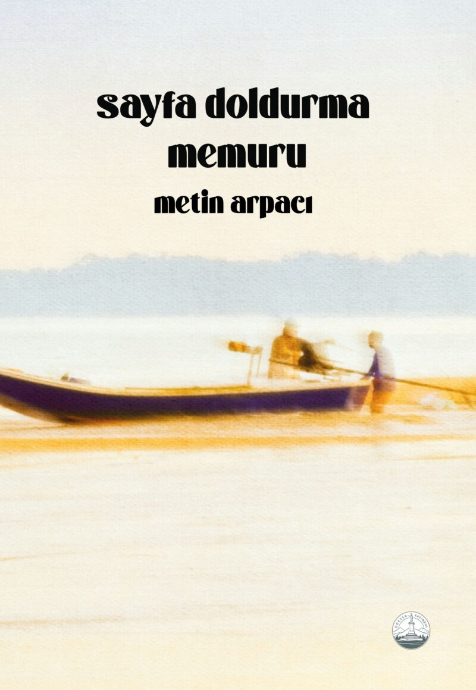
Sayfa Doldurma Memuru
"Çılgınlaşmasaydı kaleme dokunmazdı. Delirmeseydi yazmazdı. Her gün bitiyordu ve bir daha, bir daha tükenip bir dahaya varıyordu. Günleri renksiz, solgun..."
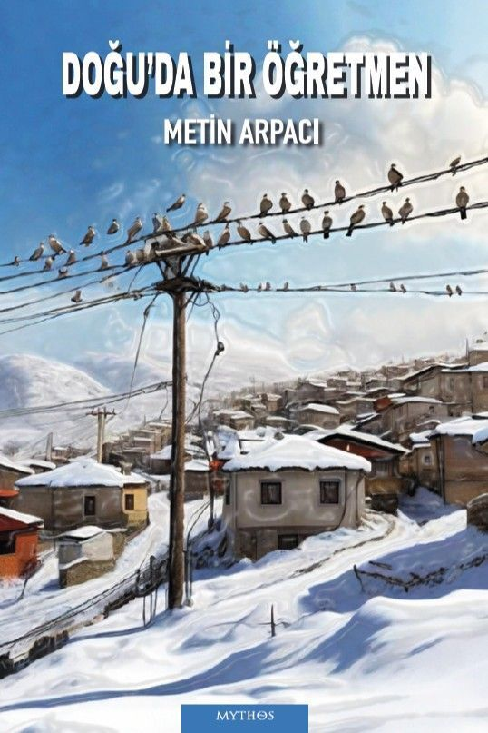
Doğu'da Bir Öğretmen
"Doğu'nun karlı dağlarında, ıssız köylerinde bir öğretmenin yalnızlığı ve umut dolu mücadelesi..."

Kedersiz Yazlar ve Yağmur Çalan Baharlar
"Kedersiz yazların ve yağmur çalan baharların arasında büyüyen bir çocukluk, bir gençlik, bir hayat..."
İZLEMESİNİ TAVSİYE ETTİĞİ FİLMLER
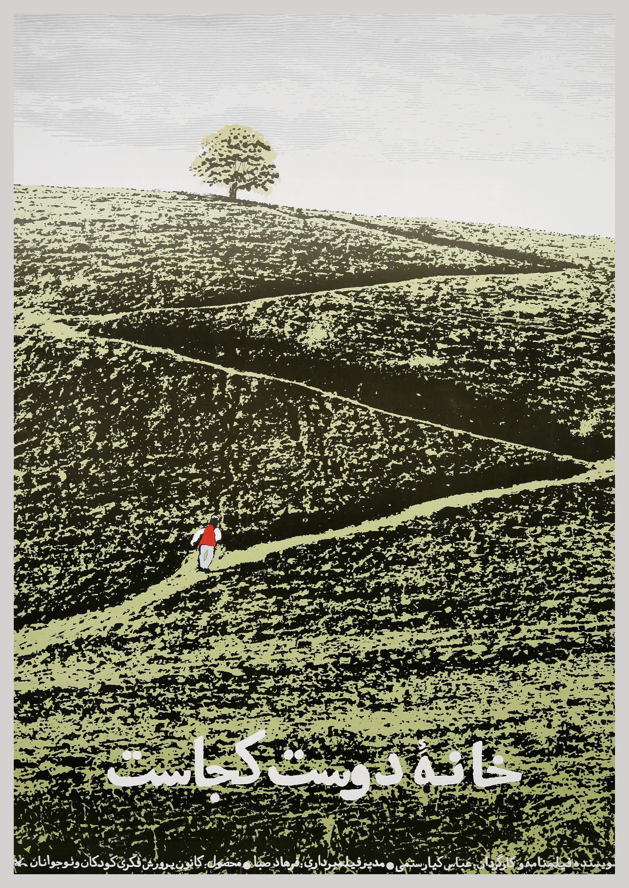
Arkadaşımın Evi Nerede
Abbas Kiyarüstemi
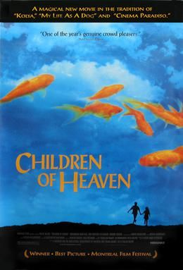
Cennetin Çocukları
Mecid Mecidi
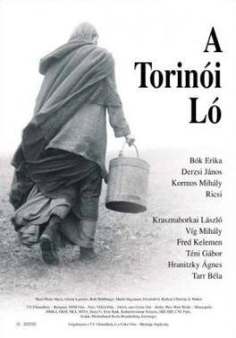
Torino Atı
Bela Tarr
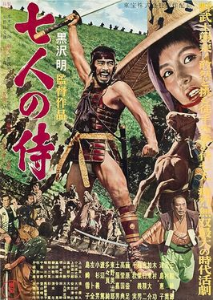
Yedi Samuray
Akira Kurosawa
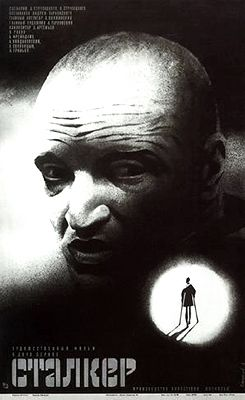
İz Sürücü
Andrey Tarkovski
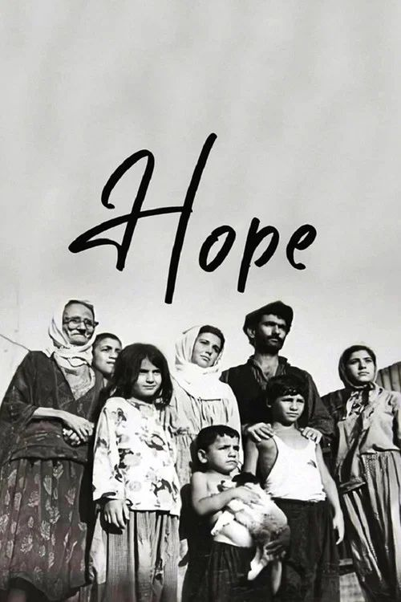
Umut
Yılmaz Güney
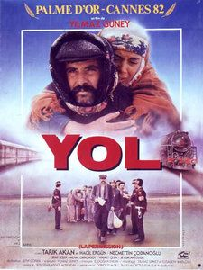
Yol
Şerif Gören / Yılmaz Güney
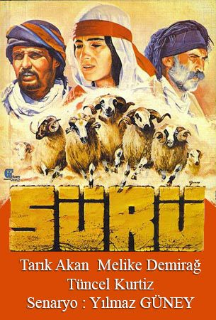
Sürü
Zeki Ökten
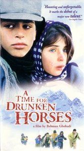
Sarhoş Atlar Zamanı
Bahman Ghobadi
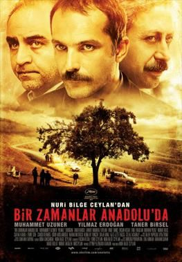
Bir Zamanlar Anadolu'da
Nuri Bilge Ceylan
İLETİŞİM
Benimle iletişime geçmek için aşağıdaki e-posta adresini kullanabilirsiniz.
arpacimetin50@gmail.com